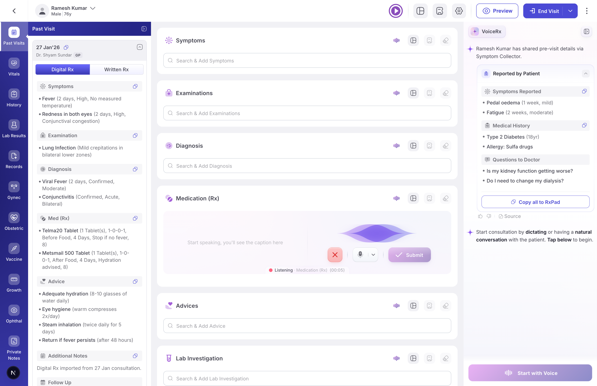
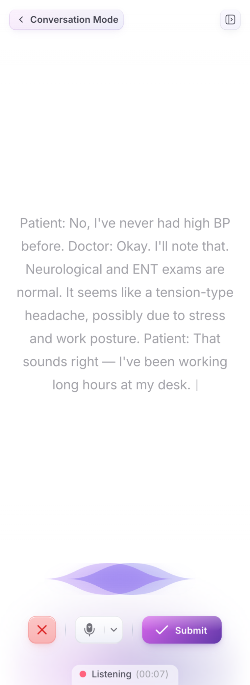
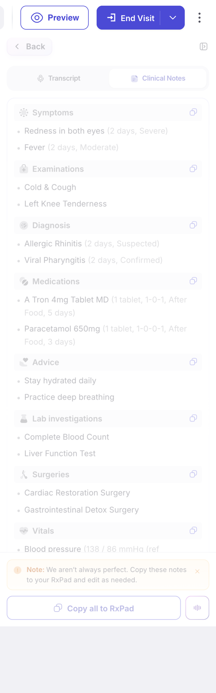
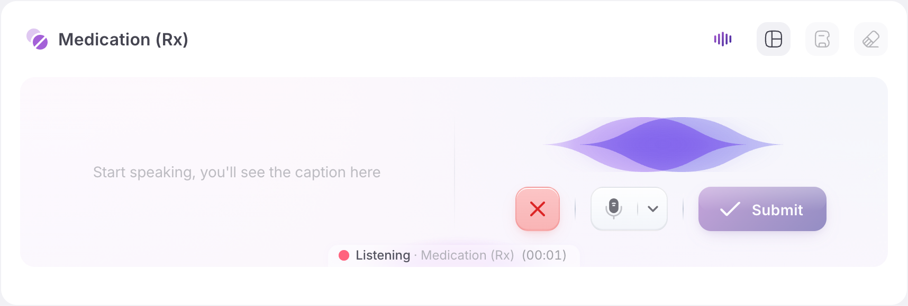

Stop
typing
Just
speak
.

STEP 01
Open VoiceRx
One panel sits inside your EMR — patient context already loaded.

STEP 02 · LIVE
Speak naturally
The Siri wave reacts in real-time. Every word lands as text — medical terms recognized.
SECURE · CLINICAL
Captured in the visit
Nothing leaves the room. The visit context stays with the patient.
STEP 03 · SUBMIT
One tap to process
AI cleans the transcript, structures it, and prepares your Rx.

STEP 04 · STRUCTURED
Clinical notes — ready
Symptoms, examinations, diagnosis, medications, labs, vitals — every section organized.

PER-MODULE
Edit just one section
Tap any module's mic — only that section fills from your dictation.
FINAL · COPY
Drop into the Rx
One tap pushes every section into your prescription form. Done.
VOICERX · IN YOUR EMR
Your whole visit — one panel
Past visits · live transcript · per-module mic · ready-to-paste Rx — never leave the chart.
SPEAK · THE VISIT
VoiceRx
don't type. just speak.
A PRODUCT BY